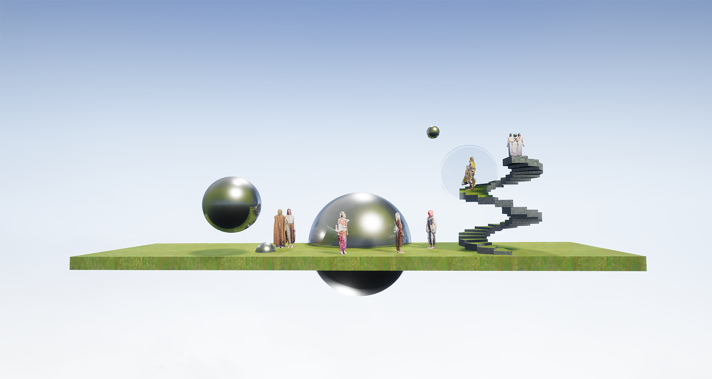
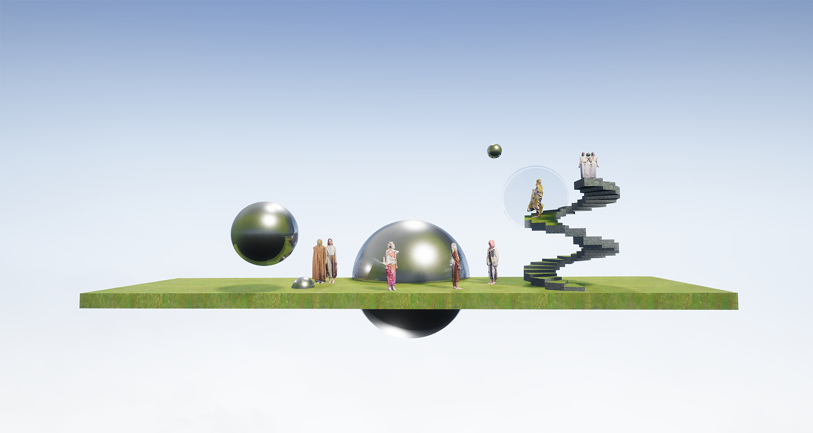

2.5 DIMENSION
Fashion print& editorial collaboration with Hanxi Ma/Zhuayi
2019 Fashion, 3D


Animated linesheet
2.5 Dimension is a womenswear collection by Chinese fashion designer Hanxi Ma. Inspired by artist M.C. Escher’s graphic, the collection 2.5 dimension explores and meanders between 2D and 3D, virtual and material worlds.

Fabric print details
Molding technique is used to reshape and rebuild the three-dimensional fashion accessories from the flat sheets of acrylic resin and felt. Interlocked hardware connect fabrics and garments instead of seams. Three-dimensional hardware print motifs create the illusionary connection joints.
 

Editorial photos
The play of digital print and physical hardware blends two-dimensional and three-dimensional worlds into one. Presented in the form of 3D scanning stills and video-art, collaborating with photographer Zhuayi, this collection breaks the boundaries of dimension through the combination of fashion and technology.